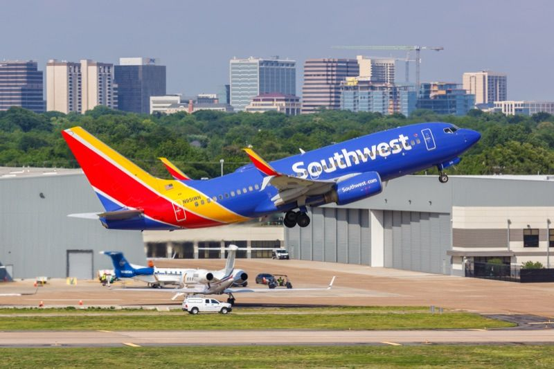
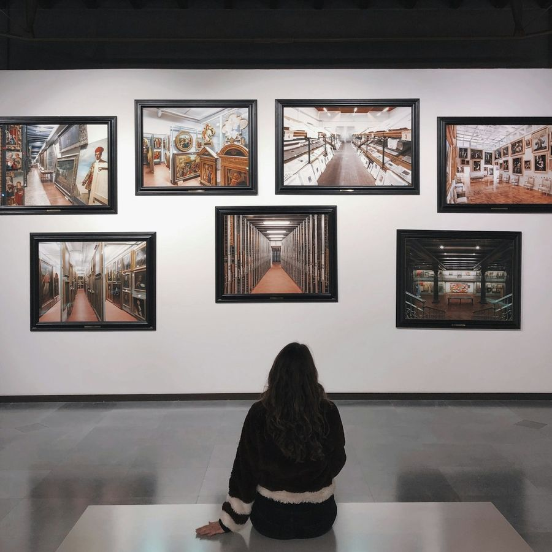
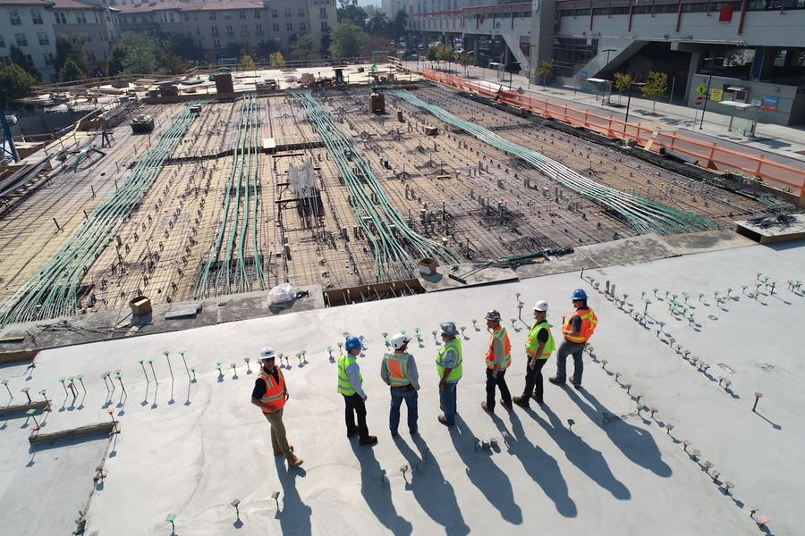

Case studies
Selected projects from our team's portfolio of 100+ economic impact studies.
The studies below are a selection from more than 100 economic impact analyses our team has authored for public agencies, universities, festivals, ports, pension systems, and private clients. Each was conducted under the same standard: an input-output model calibrated to the study geography, conservative treatment of net new versus substitutional spending, and deliverables designed for the audience that would read them.
The studies below range in scale from one festival weekend in Missoula to a national estimate of data center construction. They include a statewide system of 75 Montana airports, a pension system reported by district (LACERA) and a multi-tenant campus (Port San Antonio). Each write-up documents the model, inputs and geography used.
Click through any study below for the full write-up, including methodology, key findings, and links to published reports or press coverage.

Crowder College
Economic impact study for a Southwest Missouri community college, featured in Joplin Globe and KSNF.

Montana Statewide Aviation
System-wide aviation analysis for the Montana Department of Transportation, including a survey of more than 7,500 commercial passengers.
Zootown Music Festival
Attendee survey and economic impact study for Missoula's Zootown Music Festival, cited by Billboard and NBC Montana.

U.S. Data Center Construction
National industry report quantifying the economic footprint of data center construction across the United States.

LACERA pension impact
Economic, fiscal, and social impact analysis for one of the nation's largest public pension systems.

Port San Antonio
Multi-regional analysis of a major aerospace and logistics campus, subsequently cited by the Texas Comptroller.

Cheech Marin museum
Construction, operational, and visitor expenditure analysis for the Cheech Marin Center for Chicano Art.

Cielo Digital Infrastructure
Ongoing economic and fiscal impact analysis of major data center capital investments across multiple states.
Get a proposal within 48 hours
Tell us about your project and we will send a scope, timeline and fixed fee.